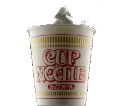

Instant Cup Noodles (Nissin)

Description
Here is a quick recipe guide on how to make Nissin cup noodles. I am recommending Nissin to you as they are, by far and in large,, the best cup noodle brand in the world.
No one can tell you otherwise.
Ingredients
- 1 instant Nissin noodle cup
- 1 packet of paste or powder (the flavour can be whatever is in the cup)
- 250ml of boiling water
Steps
Follow these steps carefully:
- Boil water to full heat.
- Add the sauce or powder into the instant noodle cup.
- Pour the boiling water into the instant noodle cup, close the lid, and leave it for three minutes.
- After the three minutes, stir the noodles thoroughly until all the paste or powder has dissolved and the noodles are seperated from one another.
- You have successfully made your Nissin Noodle Cup!
I hope you enjoy your delicious noodles! You can check out our other recipes on our Home page.